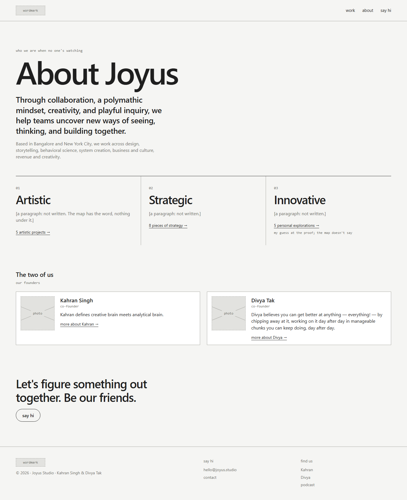
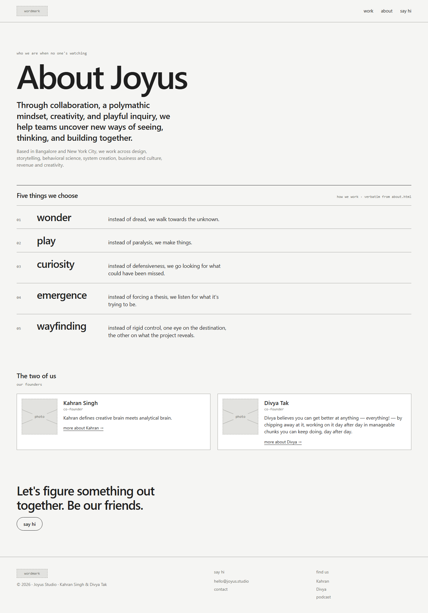

Study 08 · 1 October 2026
About
The map's three sides, or the five things already written.


Superseded by Study 13: About becomes a section of the one page, with new words.
Found on the way
- "Line before" is The Line Before, an installation.
- The three sides line up with the three type tags.
Test: check.cjs, reused lines verbatim in about.html; A's counts match its filters.